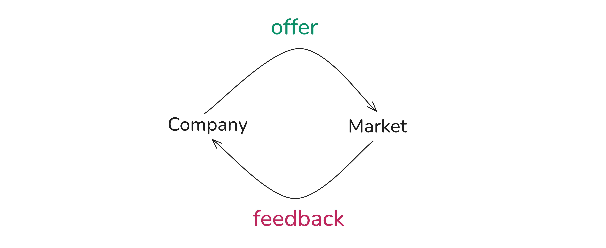
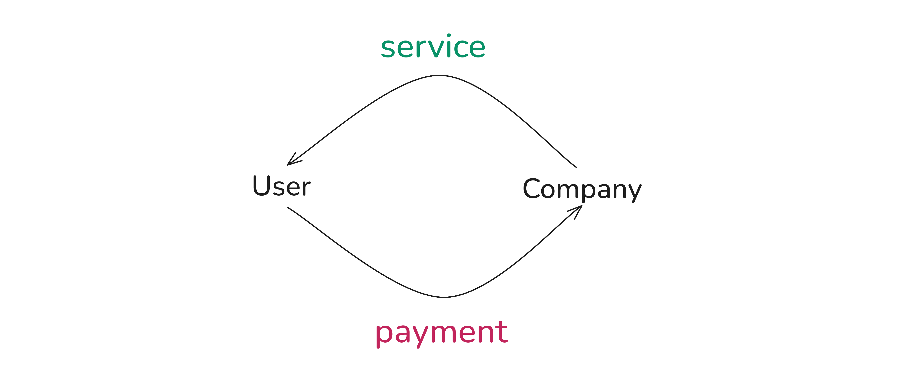
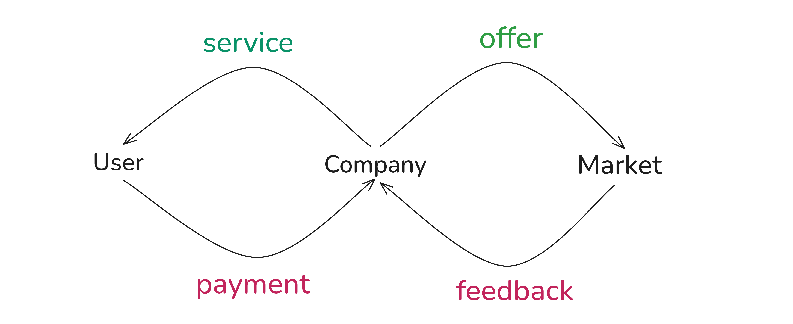
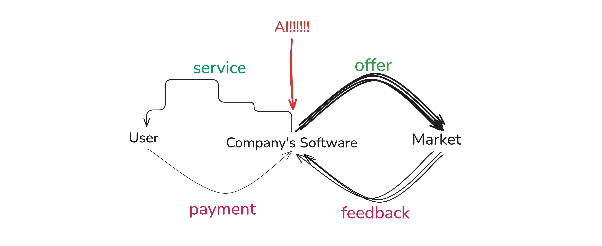
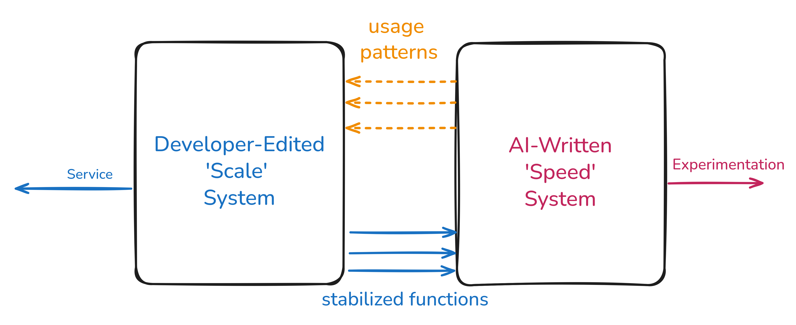

AI in the analytics workplace
How analysis work is changing, and where it sits in an organization
Guðmundur Einarsson
Statistician, TM Insurance · Lecturer, University of Iceland
Thank you for the invitation
It is a genuine pleasure to be here. Thank you for having me.
I am not here to sell you a tool, and I am not here to tell you your job is disappearing. I want to talk about something more useful: what analysis work actually is inside an organization, and what changes when a very capable assistant is sitting next to you.
Please interrupt me. The middle of this talk is a discussion, and it only works if you talk.
First: let me know my audience
Hands up — I will adjust the rest of the lecture based on this.
- Who is doing a BSc? Who is doing an MSc? Anyone further along?
- Which engineering discipline — software, industrial, mechanical, electrical, civil?
- Who comes from computer science? From mathematics or statistics? From somewhere else entirely?
- Who writes code regularly? Python, R, SQL, MATLAB, something else?
- Who has worked in industry — internship, summer job, full time?
- Has anyone ever had a decision made on the back of an analysis you produced?
- Who uses an AI assistant most days? Who has more or less stopped using one?
The last two questions matter most. Everything after this slide is about the gap between producing an analysis and an organization acting on it.
About me
Background
- BSc mathematics (CS emphasis) and MSc mathematics (statistics), University of Iceland
- PhD in applied mathematics, DTU — sparse classification in high dimensions
- Applied mathematics, genetics and machine learning, roughly in that order
Where I have worked
- deCODE Genetics — six years of genome-wide association studies
- Oqton — employee 42, geometry processing for 3D printing and robotics; acquired by 3D Systems
- TM Insurance — statistician, since autumn 2025
A startup, a research-heavy company and a regulated incumbent. The analysis was similar in all three. What happened to the analysis afterwards was not. That difference is what this talk is about.
Where we are going
- The two loops — why competent people fail to get heard, and where AI lands
- Alone or in a group — the real cost of the one-person team
- Discussion — is the AI part of the team?
- 37,000 employees — what a swarm of agents managed to do
- Prompt engineering is dead — and what replaced it
Two of these sections lean heavily on other people's writing. I will name them, and the sources are one click away on every slide that carries the 📚 icon.
Part one
The two loops
Why the most competent person in the room is often the one who cannot get anyone to listen.
This section follows Tuhin Nair, “Why senior developers fail to communicate their expertise”
A conversation you have had
The business asks
“Can we have the churn model by Friday?”
The analyst answers
“The feature pipeline has three undocumented joins, the labels leak, and nobody has validated the segment definitions since 2023. If we ship this it will be wrong and we will not know it is wrong.”
Every word of that answer is true. It is also completely ineffective.
What the business hears is not “here are the risks.” What it hears is “no”, delivered with a long list of reasons that are not its problem.
Two different monsters
The business fights uncertainty
- Is there a market for this?
- Will anyone pay?
- Are we too late?
The only cure is contact with reality, fast and often.
The expert fights complexity
- Will this still hold in six months?
- Who maintains it when I am gone?
- What breaks silently?
The only cure is restraint: fewer moving parts, slower change.
Nair's diagnosis: experts frame everything as complexity management, while the rest of the business speaks in uncertainty reduction. Both are rational. They are simply not the same language.
The sentence worth remembering
“You can't explain away someone else's problem using your own problems.” — Tuhin Nair
- Your technical debt is not the product manager's problem.
- Their launch date is not your data quality problem.
- Answering one with the other reads as obstruction, not expertise.
So the question becomes: where do these two problems come from? They are not personality clashes. They come from two machines the business is running at the same time.
Loop 1 — the discovery loop

Marketers, salespeople, product managers and the CEO take an idea to market and feed back what they learn. Speed is the whole point. A slow loop learns nothing before the money runs out.
Loop 2 — the service loop

Paying customers use the thing that already exists, and the team keeps it running. Continuation and guarantee of service. This loop pays for everything, including loop 1.
Both loops run at once

Loop 1 wants speed · Loop 2 wants stability — and they share the same codebase, same data, same people.
The argument on slide seven is not two personalities disagreeing. It is two loops pulling on one system.
Which loop is your analysis in?
Analysts sit in both, often on the same day, and usually without saying which.
Loop 1 analysis
- “Is this segment even worth pursuing?”
- A quick sizing before a pricing decision
- An exploratory notebook nobody will rerun
- Success = a decision made sooner
Loop 2 analysis
- The reserving model the regulator reads
- The dashboard the whole company steers by
- The pipeline that runs every night at 03:00
- Success = still correct in two years
Most conflict I have seen comes from one side treating a loop-1 question as loop-2 work, or shipping loop-1 work into a loop-2 position. Say out loud which one you are doing.
How AI fits in: the asymmetry

AI is spectacular at loop 1. Ten variants of an analysis before lunch, a prototype dashboard in an afternoon, a first pass at any dataset in minutes.
Loop 2 gets the bill: more code than anyone read, more pipelines than anyone owns, more numbers in circulation than anyone can reconcile. Output went up. Understanding did not.
How AI fits in: the way out

Stop arguing about how fast to go. Split the system instead. Let AI write freely in the Speed half; promote only what survives contact with reality into the Scale half, edited by someone accountable.
Nair's phrasing: the expert stops being a writer and becomes an editor. And the sentence that unlocks the conversation is “Can we try something quicker?” — it grants the business its speed while keeping the durable system out of the blast radius.
Turn up the dial and watch
Interactive applet in web based slides
Nothing here is measured — it is a cartoon. But the shape is the honest part: the gain and the cost land in different loops, and usually on different people.
Part two
Alone, or together
The one-person team was always tempting. AI makes it far more tempting.
This section follows Edmond Lau, “Beware the One-Person Team”
Why one-person teams happen
Nobody sets out to isolate people. It happens through a reasonable chain of decisions:
- Big teams are visibly inefficient — meetings, coordination, arguments.
- There are more worthwhile projects than there are people.
- So split them up: one owner per project, maximum surface covered.
- On paper, throughput went up. Five projects instead of two.
“Software development is a team sport.” — Fitzpatrick & Collins-Sussman, quoted by Edmond Lau
Lau's recommendation is blunt: keep a minimum team size of two.
The hidden costs of solo work
- No design feedback. You can spend three weeks on the wrong approach and nothing stops you.
- Less learning. Nobody else holds the context, so nobody can teach you inside it.
- Lower motivation. No peer pressure, no shared accountability, no one noticing.
- Bus factor of one. You get sick, you take a job elsewhere — the work stops dead.
- Progress looks slow. Even when it is not. Stakeholders lose patience with a silent project.
- A stall halts everything. With two people, one is still moving while the other is stuck.
- The tedium is lonely. Someone has to do the grim data cleaning either way — it is worse alone.
- No one to celebrate with. A milestone you announce to an empty room barely registers.
Notice how many of these are about morale and correction, not throughput. They are invisible on a project plan, which is exactly why they get cut.
Groups: the gain and the cost
✔ What you gain
- Wrong approaches get caught in days, not weeks
- Knowledge spreads; practice gets standardised
- Momentum survives one person being stuck
- Someone shares the bad weeks with you
- Milestones are actually celebrated
- Real review — the thing that makes work trustworthy
✘ What you pay
- Coordination overhead: meetings, syncs, hand-offs
- Fewer projects can run in parallel
- Consensus is slower than a decision
- Diffuse ownership — “someone else will check it”
- Onboarding cost before anyone is productive
Lau's fix is not “bigger teams”. It is to serialize priorities: group related work thematically so two or three people share context, rather than staffing five isolated projects at once.
The case for working alone
It would be dishonest to present solo work as simply worse. It has real advantages:
✔ Genuinely better alone
- Deep focus, no interruptions, long uninterrupted thinking
- Decisions in seconds instead of a meeting
- One coherent mental model, no translation loss
- Unambiguous ownership and accountability
- Ideal for short, exploratory, throwaway work — loop 1
✘ Where it breaks down
- Anything long-lived, load-bearing or regulated
- Anything where being wrong is expensive
- Anything that must outlive your employment — loop 2
The variable is not team size. It is which loop the work lives in, and how expensive it is to be quietly wrong.
The AI-era one-person team
- One analyst with a good assistant now visibly produces what a small team used to.
Managers see the output and draw the obvious conclusion. - The assistant covers several of Lau's complaints — sort of. It reviews your design, explains unfamiliar code, keeps you moving when you stall, and never gets bored of the tedious part.
- So the visible symptoms of isolation disappear, while the actual isolation gets worse.
✘ What it does not replace
- Bus factor — still one. The model does not remember your project next year
- An independent stake in being right
- Someone who will escalate when you are wrong
- Shared organizational memory and credibility
The uncomfortable part
- A model will agree with you far more readily than a colleague will
- You can now be confidently wrong faster, and with better formatting
- Nobody in the building has read what you shipped
Over to you
Is the AI part of the team?
Not a rhetorical question. I would like to hear actual answers.
Discussion
If a team of two beats a team of one…
…does you-plus-an-agent count as two?
- Which of Lau's benefits does an agent actually deliver, and which does it only imitate?
- Can something be a teammate if it has no stake in the outcome and no memory of last quarter?
- A colleague who disagrees with you costs you time. Is a model's agreeableness a feature or a defect?
- If the agent writes it and you approve it — who is accountable when it is wrong?
- Would you sign off on an analysis you did not write and do not fully understand? Have you already?
- Does your answer change between loop 1 and loop 2 work?
Hold on to your answer. The next section is what happens if you answer “yes, and let's have 37,000 of them.”
Part three
The biotech with 37,000 staff
What happens when the agents are given an org chart.
Reported at artificialscience.org · original work by James Zou and colleagues, published in Science, 17 September 2026
The Virtual Biotech
A Stanford-led system that does not look like a model. It looks like a company.
- A chief scientific officer agent at the top, delegating downward
- Divisions beneath it: target discovery, molecule design, safety assessment, clinical-trial analysis
- Beneath those, specialist workers — up to 37,075 agents on a single task
- For the trial analysis, one agent per clinical trial: 37,075 agents, 55,984 trials
- Built on Claude models, though the authors note the approach is not tied to one model family
The interesting claim is not “bigger model”. It is that organizational structure itself was the useful ingredient — the same hierarchy humans invented to make many limited workers into one capable firm.
Scale the org chart
Interactive applet in web based slides
Drag it from a small team to 37,075. The dots flowing upward are findings being escalated. Notice what the structure is for: nothing at the bottom needs to understand the whole problem.
What it actually found
And a concrete proposal: restricted to data from before January 2025, the system independently suggested an antibody–drug conjugate targeting CD276 for lung cancer. External reviewers judged it credible.
Merck and Daiichi Sankyo were pursuing the same strategy at the same time — ifinatamab deruxtecan received FDA Breakthrough Therapy Designation in August 2025.
How 37,000 agents cooperate
- Hierarchy. Information flows from specialists up through divisional chiefs to the executive agent. Nobody holds the whole problem — exactly like a real firm.
- Narrow scope per worker. One agent, one clinical trial. A small, checkable job is a job you can do 37,000 times without it degrading.
- Data engineering, not context stuffing. A tool called Paperclip converts messy human-formatted material into a structured file system the agents can search — rather than dumping raw PDFs into a context window.
- Debate as quality control. The authors report that debate among many agents produced “more robust answers than a single large model working alone.”
Three of those four are organizational design and data engineering. That is the part of this you can copy on Monday. It is also, not coincidentally, the part that looks like your job.
The caveats are the lesson
- The authors themselves call it “an early demonstration, not a validated drug discovery pipeline.”
- Nothing has been tested in a lab or a clinic. Not one proposal.
- The CD276 result is retrospective validation, not prediction — the related drug already had breakthrough designation before publication.
- The trial findings are associations across published trials, with all the publication bias that implies.
This is a textbook loop 1 artefact: a fast, wide-ranging generator of promising hypotheses. Enormously valuable — and not yet something you would bet a patient on.
Someone still has to do the loop-2 work. That someone is the person who can read the caveats and still tell you what to believe.
So what does this mean for you?
The work that shrinks
- Reading 50,000 documents by hand
- Writing the tenth variant of a script
- The first pass over an unfamiliar dataset
- Boilerplate, glue, translation between formats
The work that grows
- Deciding what question is worth 37,000 agents
- Building the data substrate they work on
- Designing the checks, the debate, the review
- Reading the caveats and saying what holds
- Being the person who signs their name to it
The scarce thing was never the analysis. It is someone who can be held responsible for a conclusion.
Part four
Prompt engineering is dead
Which is good news. What replaced it is more interesting, and harder.
Prompt engineering is dead
- The incantations are gone. “You are a world-class expert…”, “take a deep breath”, elaborate role-play scaffolding — the models outgrew all of it.
- Clear writing now beats clever prompting. If you can brief a competent new colleague, you can brief a model.
- The leverage moved outward: to context, tools, data structure, verification, and the loop you put around the model.
The skill was never phrasing. It was knowing what a good answer would look like before you asked.
So here are four things that did not get automated away.
Four things that still matter
- Know what you are doing. If you do not know, you cannot be accountable.
- Make it convince you. Play devil's advocate against it, on purpose.
- Ask it to explain. Make it build artifacts that create understanding.
- Point it at old code. The best low-risk place to start using it seriously.
Every one of these is a habit, not a technique. None of them are about the prompt.
Know what you are doing
If you don't know what you are doing, you cannot be accountable for it.
- Accountability is not a formality. It is the thing the organization is actually buying from you. The model cannot hold it — it has no stake, no licence, no career.
- Before you accept an answer: could you defend it in a meeting with someone who wants it to be wrong? Could you reproduce the reasoning without the model?
- This does not mean write everything yourself. It means never sign off on a step you could not, in principle, have taken.
- The failure mode is specific and common: fluent output you do not understand, arriving faster than your ability to check it.
Corollary: this is also the strongest argument for still learning the fundamentals properly, in the degree you are currently doing.
Make it convince you
A model will agree with you. That is the single most dangerous thing about it. So make agreement expensive.
- “Argue the opposite of what you just told me, as strongly as you can.”
- “What would have to be true for this to be wrong? How would I detect it?”
- “Give me the three strongest objections a sceptical reviewer would raise.”
- Ask the same question in a fresh session, framed differently, and see whether the answer survives.
- Ask for the assumption it is least confident about — then go check that one yourself.
- Never ask “is this right?”. Ask “how is this wrong?”
You are deliberately reconstructing the colleague who disagrees with you — the thing the one-person team lost.
Ask it to explain
Do not only ask for output. Ask for things that leave you smarter than you were.
- “Explain this to me as if I have to present it to the board on Thursday.”
- Ask for a diagram of the data flow, a worked example with real numbers, a small simulation that demonstrates the effect.
- Ask for a one-page memo stating the assumptions, the method and the limitations — then check whether you agree with every line.
- Ask for the same idea three ways: the formal version, the intuition, and the version for a non-technical stakeholder.
- These artifacts are not decoration. They are how loop-1 output becomes something loop 2 can actually accept.
Test of whether it worked: can you now explain it without the model in the room? If not, you have a document, not an understanding.
Point it at old code
If you want one concrete place to start on Monday, start here. It is low risk, high information, and immediately useful.
- Take the script nobody wants to touch. Ask for a plain-language walkthrough of what it does.
- “Where are the silent failure modes? What happens on empty input, on a missing column, on a duplicate key?”
- “Which of these joins can change the row count, and under what conditions?”
- “Write the tests this code should have had.” Then run them and watch what breaks.
- “What is this file implicitly assuming about the data that is never stated?”
Why start here
- Ground truth exists — the code either runs or it does not
- You learn the model's failure modes on something you can verify
- The output is documentation and tests: pure loop 2 value
- Nothing is shipped to a customer while you learn
If you remember five things
- Your organization runs two loops. Know which one your analysis is in, and say it out loud.
- AI accelerates loop 1 and quietly bills loop 2. The gain and the cost land on different people.
- The one-person team was already risky. AI hides the symptoms without removing the risk.
- Structure and data engineering are what turned 37,000 agents into something useful — not a bigger model.
- Prompt engineering is dead. Judgement, scepticism, explanation and accountability are not.
The job was never producing the number. It was being the person who can stand behind it.
Thank you for attending
Questions, disagreements and counterexamples all very welcome.
Guðmundur Einarsson · gumeo.github.io
Sources: Tuhin Nair (nair.sh) · Edmond Lau (effectiveengineer.com) · Zou et al., Science 2026 (artificialscience.org)